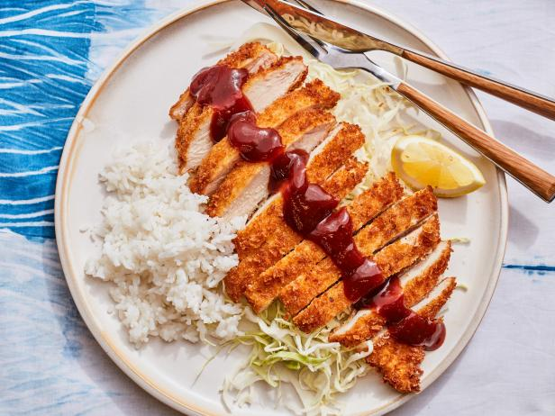

Chicken Katsu

ingredients
- 4 skinless, boneless chicken breast halves - pounded to 1/2 inch thickness
- salt and pepper to taste
- 2 tablespoons all-purpose flour
- 1 egg, beaten
- 1 cup panko bread crumbs
- 1 cup oil for frying, or as needed
Cooking instructions
- Season the chicken breasts on both sides with salt and pepper. Place the flour, egg and panko crumbs into separate shallow dishes.
- Coat the chicken breasts in flour, shaking off any excess. Dip them into the egg, and then press into the panko crumbs until well coated on both sides.
- Heat 1/4 inch of oil in a large skillet over medium-high heat. Place chicken in the hot oil, and cook 3 or 4 minutes per side, or until golden brown.